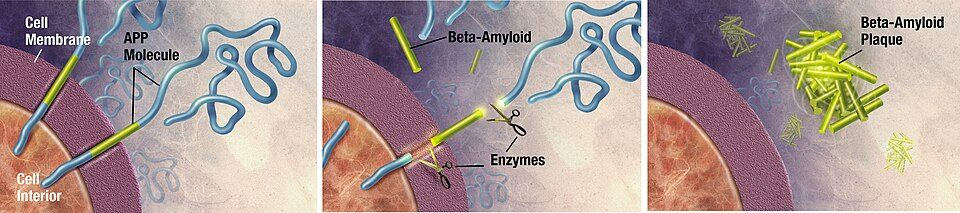

What they are
Anti-amyloid antibodies are monoclonal antibodies that bind to beta-amyloid and help microglia clear its plaques from the brain. They act on one of the central mechanisms of Alzheimer's disease, but not on all of them: tau protein, inflammation and the loss of neurons continue.
Two are approved in Europe today:
- Lecanemab (Leqembi): an intravenous infusion every 2 weeks. In the United States a maintenance schedule every 4 weeks and a weekly injection under the skin were later approved.
- Donanemab (Kisunla): an intravenous infusion every 4 weeks. It can be stopped once a PET scan shows the amyloid has gone.
Aducanumab, controversially approved in the United States in 2021, was withdrawn in 2024.
Not to be confused with the classic dementia medicines
Donepezil, rivastigmine, galantamine and memantine belong to a different family. They act on neurotransmitters (acetylcholine and glutamate), are taken by mouth or as a patch, have been used for more than twenty years and improve symptoms somewhat for a time, but they do not remove amyloid. They can be taken alongside an anti-amyloid antibody. They are explained in medicines for dementia.
How well they work
The data come from two trials in people at an early stage, followed for 18 months:
| Trial (year) | Medicine | Result on the CDR-SB scale (0 to 18 points) |
|---|---|---|
| CLARITY AD (2023) | Lecanemab | Worsened by 1.21 points against 1.66 with placebo: 0.45 points less, 27% slower decline |
| TRAILBLAZER-ALZ 2 (2023) | Donanemab | 0.7 points less than placebo; up to 35% slower decline on another scale in people with little tau |
In other words, they slow decline by a few months. They do not stop the disease or bring back what has been lost. There is debate about whether half a point on this scale is something patients and families notice in daily life: some experts put a noticeable change at around 1 point or more.
Who can receive them
- People with mild cognitive impairment or mild dementia due to Alzheimer's. They are not indicated at moderate or advanced stages.
- With amyloid confirmed by an amyloid PET scan or cerebrospinal fluid test. Blood tests help with selection, but do not yet replace these tests in every case.
- With a recent MRI that does not show too many microbleeds or vascular lesions, and not taking anticoagulants.
- With testing of the APOE gene. In the European Union, the European Medicines Agency (EMA) authorised them (lecanemab in April 2025 and donanemab in September 2025) only for people with one or no copies of APOE ε4, because people with two copies have many more complications.
Only a minority of people with Alzheimer's meet all the requirements.
Side effects: ARIA
The main risk is ARIA (amyloid-related imaging abnormalities):
- ARIA-E: swelling or inflammation in the brain. In the trials it occurred in 12.6% of patients on lecanemab and 24% on donanemab (against 2% on placebo).
- ARIA-H: microbleeds or iron deposits. 17% with lecanemab and 31% with donanemab (against 9-14% on placebo).
Most cases cause no symptoms and are picked up on scheduled monitoring MRI scans, mainly in the first months. Some cause headache, confusion, visual disturbances or seizures, and very rarely they are serious or fatal. With donanemab, starting treatment with doses that rise more slowly reduces swelling. Infusion reactions can also occur.
For all these reasons, treatment is offered only in specialist units, with regular MRI scans and a plan for what to do if symptoms appear.
The situation in Europe and Spain
The EMA initially turned down both medicines (2024 and early 2025) and approved them after re-examination, with the restrictions above, a controlled access programme and a patient registry. European approval does not mean they are available everywhere: each country decides whether to fund them. In the United Kingdom, NICE did not recommend NHS funding in 2025 because of the balance between cost and benefit. In Spain, access depends on the Ministry of Health's funding decision and on how each region organises care; your memory clinic can tell you whether they are offered locally.
A change of approach
Although their benefit is modest, these medicines have shown that acting on amyloid changes the course of the disease, and they have changed diagnosis (with biomarkers) and the organisation of care. Their use before symptoms in people with amyloid is being studied (the AHEAD 3-45 and TRAILBLAZER-ALZ 3 trials), as are medicines against tau and combinations.
Questions to ask your doctor
- Am I a candidate? What tests do I need?
- How many copies of APOE ε4 do I have, and what does that mean?
- What realistic benefit can I expect, and with what risks?
- How often will I need to go to hospital and have MRI scans?
- Is it available and funded where I live?
Sources
- van Dyck CH, et al. Lecanemab in early Alzheimer's disease (CLARITY AD). N Engl J Med. 2023;388:9-21.
- Sims JR, et al. Donanemab in early symptomatic Alzheimer disease (TRAILBLAZER-ALZ 2). JAMA. 2023;330:512-27.
- Cummings J, et al. Lecanemab: appropriate use recommendations. J Prev Alzheimers Dis. 2023;10:362-77.
- European Medicines Agency. Leqembi (lecanemab) and Kisunla (donanemab).
- Hampel H, et al. Amyloid-related imaging abnormalities (ARIA): radiological, biological and clinical characteristics. Brain. 2023;146:4414-24.
- NICE. Lecanemab and donanemab for treating mild cognitive impairment or mild dementia caused by Alzheimer's disease. 2025.